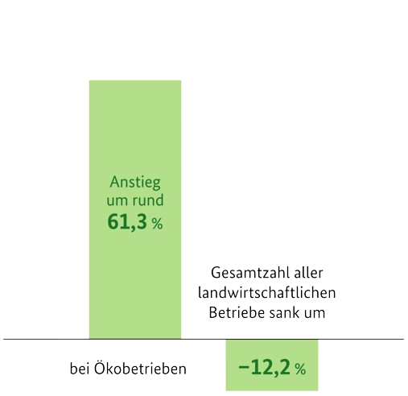

Gliederung
01
Warum das Thema?
- Entwicklungen
- Bedeutung
- Auf was achtet ihr?
02
globale Probleme
- Verursachende Probleme
- Ausgesetze Herausforderungen
03
lokal/regional
- Herausforderungen
- Restriktionen
- Folgen
04
Lösungen?
- Plenum

Warum das Thema?
globale Probleme
lokal/regional
Lösungen?
Klimawandel
Extreme wie Dürre
Bienensterben
Invasion
...
Protest
Unwissen
Wichtigkeit
"If agriculture goes wrong, nothing else will have a chance to go right." -


beschreibt die Verschlechterung der Qualität von Böden bis zum Verlust seiner Funktionsfähigkeit
Biodiversitäts- & Lebensgrundlagen-Senkung durch Wasser-, Sauerstoff- und Nähstoffgehalt-Verlust


ärmere Bevölkerung ist darauf angewiesen ungeeignete
Landnutzung oder Landbewirtschaftungspraktiken zu
nutzen, um an Nahrungsmittel zu kommen
⇓
Soziales (z.B. Bevölkerungswachstum)
↯
Klimawandel
↯
Biodiversität


Auf 50 % der Flächen wird Landwirtschaft betrieben
Davon 70 % Ackerland
Rückgang der landwirtschaftlichen Betriebe,
jedoch
starke Zunahme im Bereich der Bio-Landwirtschaft

1900 -> 1 Landwirt versorgte 4 Personen
1950 -> 1 Landwirt versorgte 10 Personen
heute -> 1 Landwirt versorgt 140 Personen
dies durch modernere Technologien und auf Kosten der Umwelt (Grundwasser, ...)
Anbau von Tierfutter nimmt einen Großteil der Flächen ein (10 Millionen Hektar)


Baden-Württemberg als Land mit Durchschnitt von 9°C
bereits jetzt einer der wärmsten Gebiete
Deutschlands
⇓
Verstärkende Ausprägung jetzt und in Zukunft (siehe
Karte zuvor)
⇓
Ernteausfall durch plötzliche Hitzeperioden bei sonst nicht zu trockenem Frühjahr
Wurzelausprägung durch gute Verhältnisse im Frühjahr
nicht an den unerwartet dürren Sommer angepasst!
Außerdem ist der Schorfbefall dann bestärkt!
⇓
Ausweich auf Maisanbau

"An solch einen Verlauf des Wetters [2023] kann sich [Karlsruher] Werner Kunz zuletzt 2003 erinnern" -
Invasive Art, die Biodiversität hierzulande einschränken könnte
Macht Jagd auf Bienen, Hummeln oder Schmetterlinge
Potenzielle Gefahr, auch natürlich für die Landwirtschaft


{kind=link}